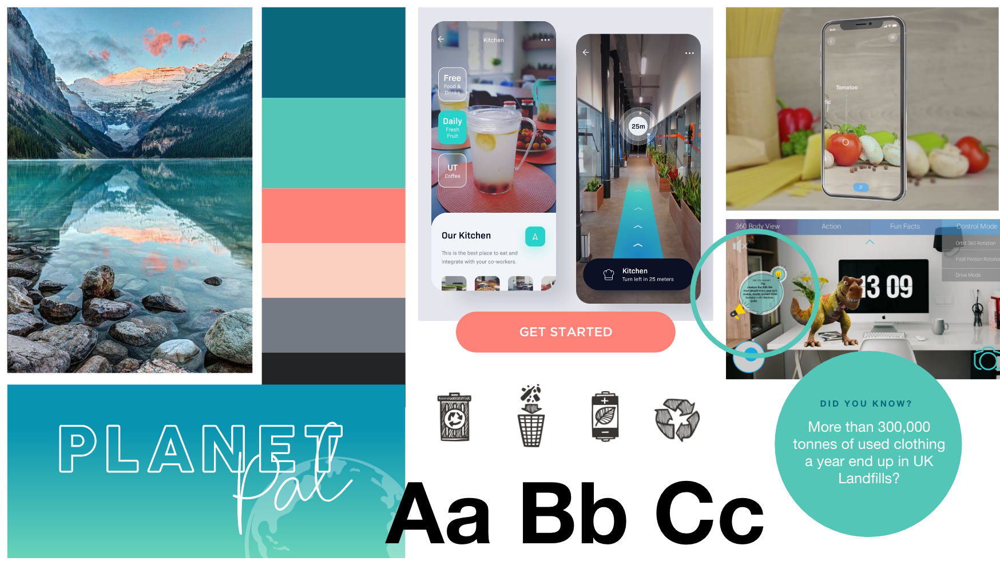
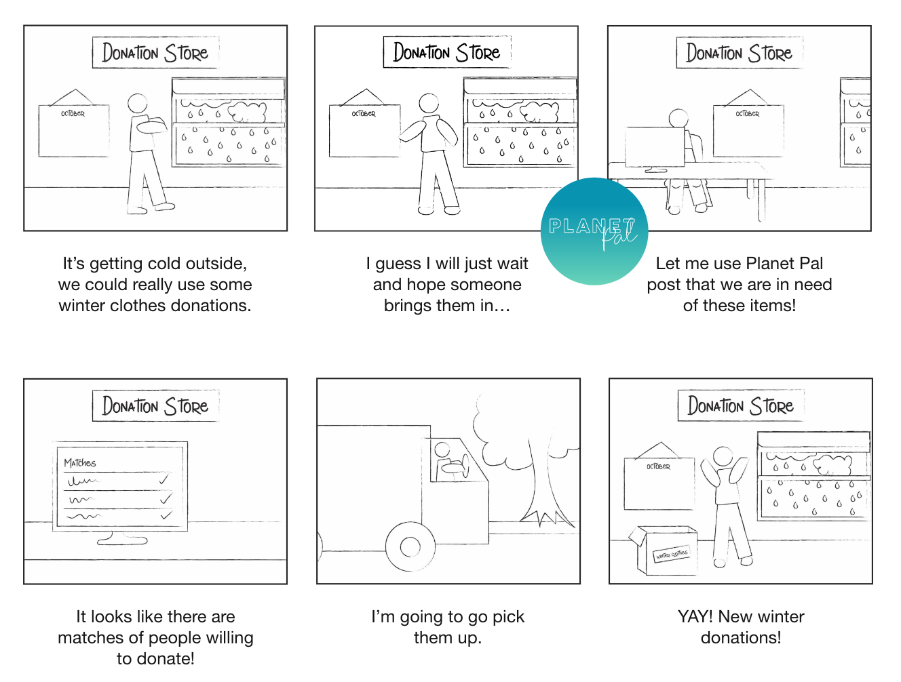
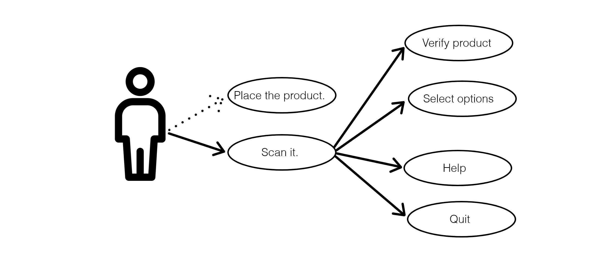
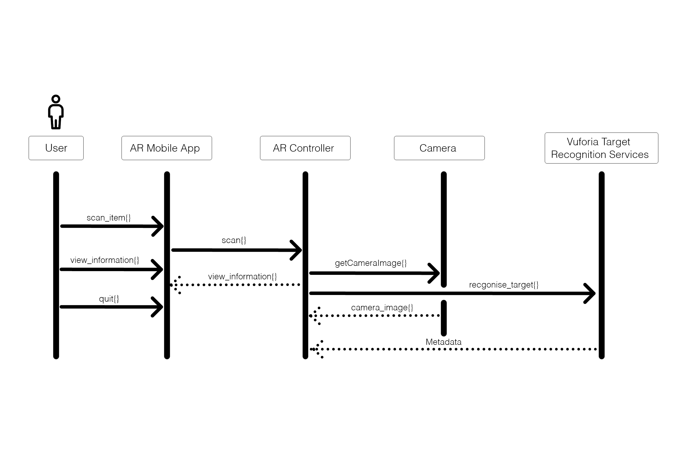
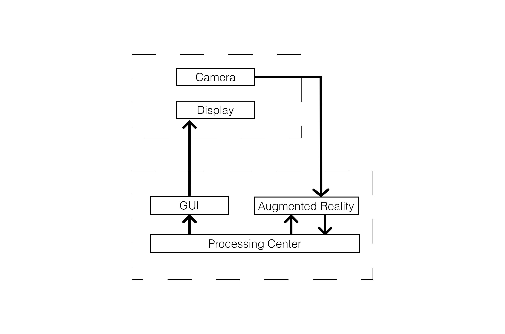
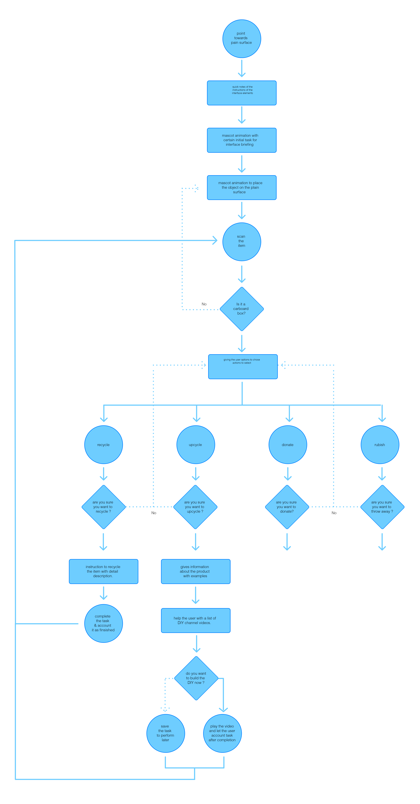
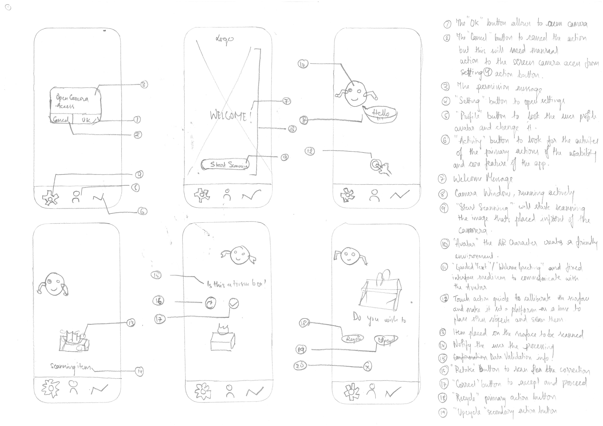
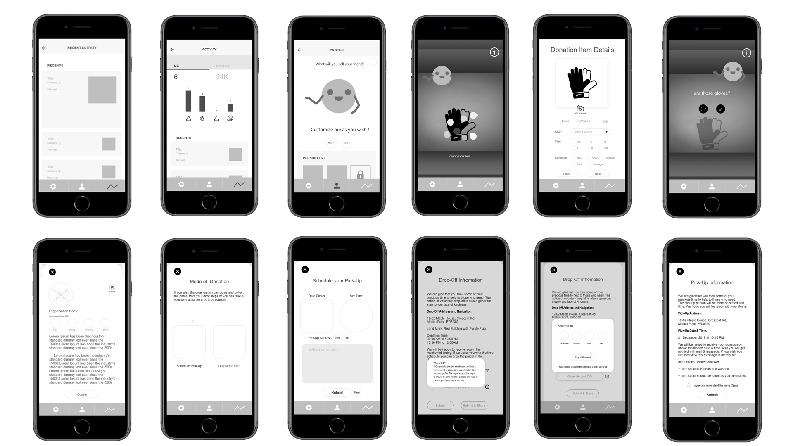
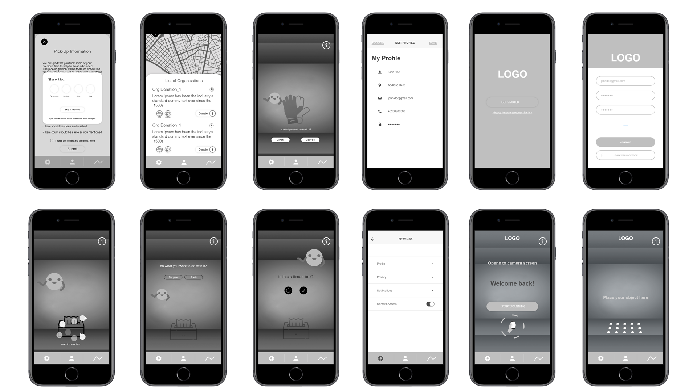
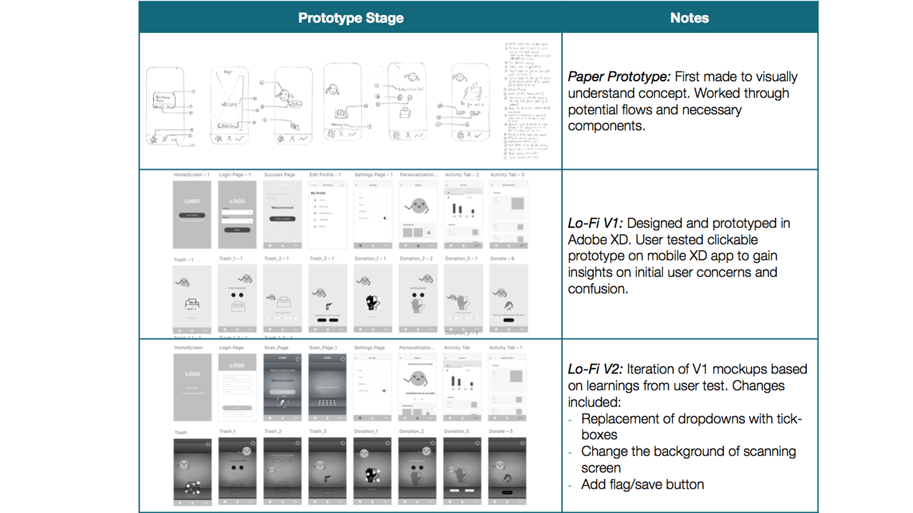

Sustainability AR Application
skills: User Requirement, Functional Requirement, Lo-Fi Design
& Usability Testing
Adobe Xd, Adobe Photoshop, Trello, iCat
Background
In the process of making an application to an idea with structuration and standardisation of the existing market of Augmented Reality Application, productivity tool. Research on the AR application usability, and the component requirement to make the application more user friendly and compactable with latest trend pattern. Environment of home screen needs to have all the component as a frame work which can be beautified and made with the level design by my team member for Hi-Fi Design.
Project Timeline (6 Weeks)
Aims & Objective
To make an exoskeleton for an AR application which have the potential to play as a tool and productivity kit with insights of social contribution and make the tools more user friendly with handy interface and interaction with simplest navigation.
The objective was to start from basic on paper sketching which was starting the application design out of scrap. The Lo-Fi Model is divided into two phases where to find the interaction nodes and map them to application architecture.
User & Functional Requirement
The user and functional requirement are linked which needs to have a good finding of what interface elements will make the user navigation and engagement easier. The user can be of any background and can be novice to the AR environment. So we kept the interaction element placement and finding easy while with a guide tips tour, when a user starts using the application for the first time.
- Guide Tips/ Application Walkthrough
-
The walkthrough will give a small and brief narrative to use the application and make it easier for the novice user to get use to and know the interface and response of button and their redirection screen. They are also a guide to show the navigation of the user to all the interaction screen. And we place the call to action at the end of the animation to show the end of the interaction and help the user process the interaction elements and accept that they understand the process and can do it by themselves. The process focus on what and how. This was not achieved by any traditional ways of screen interaction. It was done with the animation character “Planet Pal” that gives a tips with animation and character interaction with user and help the user achieve the goal.
- Clean Interface
-
“Good, generous whitespace can make some of the messiest interfaces look inviting andsimple.”(Kennedy,2020) Itriedtokeeptheinteractionelementasminimalisticaspossible with the interaction buttons and other engagement elements.
- Help Option
-
Help option was put in most of primary interaction screen, so that if the user feels confused or have issue with to move further in the process can take a hint for the further steps.
- Easy Navigation
-
The navigation needs to be linked up in the flow of story and hence make the user comfortable to get use to with the system. And find the way back to redo the action if failed in-between a process of interaction.
The functional requirement includes working more closely with Image Recognition and Augmented Reality and its integration with the application:
IR ( Image Recognition) is the major requirement for the defined process. Which also includes feature extraction:
• SIFT - Scale Invariant Feature Transforms
• SURF – Speeded Up Robust Features
• Matching
• 3D Object Detection in SURF
• FAST - Corner Detection
• FREAK - Fast Retina Keypoint Detection
• BRISK - Binary Robust Invariant Scalable Key-points
• Character Recognition and Reading
Selection of APIs and Tools
• Image Processing and Image Matching APIs
• OpenCV and MatLab
• Character Recognition APIs
• Tesseract
• ABBY OCR
• Augmented Reality APIs and SDKs
• Vuforia
• FastCV
• Aurasma
• Layar
Storyboarding
Use Case

The bold lines indicate the user’s interaction with application and dotted lines for the vice-versa.
The AR Mobile APP and AR Controller interact and the input for image was from Camera.
And the Vuforia database will recognise the image and help the user move with further interactions.
Similar interaction was made for the other services and interaction with the system and application model.
Sequence Diagram

The user in the primary action needs to place the product and scan it.
The user then need to verify the product that was scanned.
The user needs to select an option to Recycle, Donate or Trash.
The user can also opt for the help option which will be a guide to help the user with the primary action.
The user can quit the action
OSI Model
The application layer and session layer makes the interaction, with the camera sending the inputs to the augmented reality, there is a change of interaction to match the captured image with the reference image in the vuforia database, which then interact with the processing centre, the chain of interaction validate the user input and verifies and asks the user to rescan the item. The interaction is also done between GUI which is further reflected in the Display. The device and the application server needs to be connected to process the product scanned repeated or move the process it further.
Application Architecture
Paper Prototype
Low-Fidelity Wireframes
 Low-Fidelity Usability Testing
Summary
The minor changes like replacing dropdowns with tick-boxes, change the background of scanning screen. The mini-icon describes the category or field of action for the organisation in the list. Previously there was no flag/ save button which was introduced after the testing. All the changes made were suggested by the participant or was an issue that the participant faced while using the application.